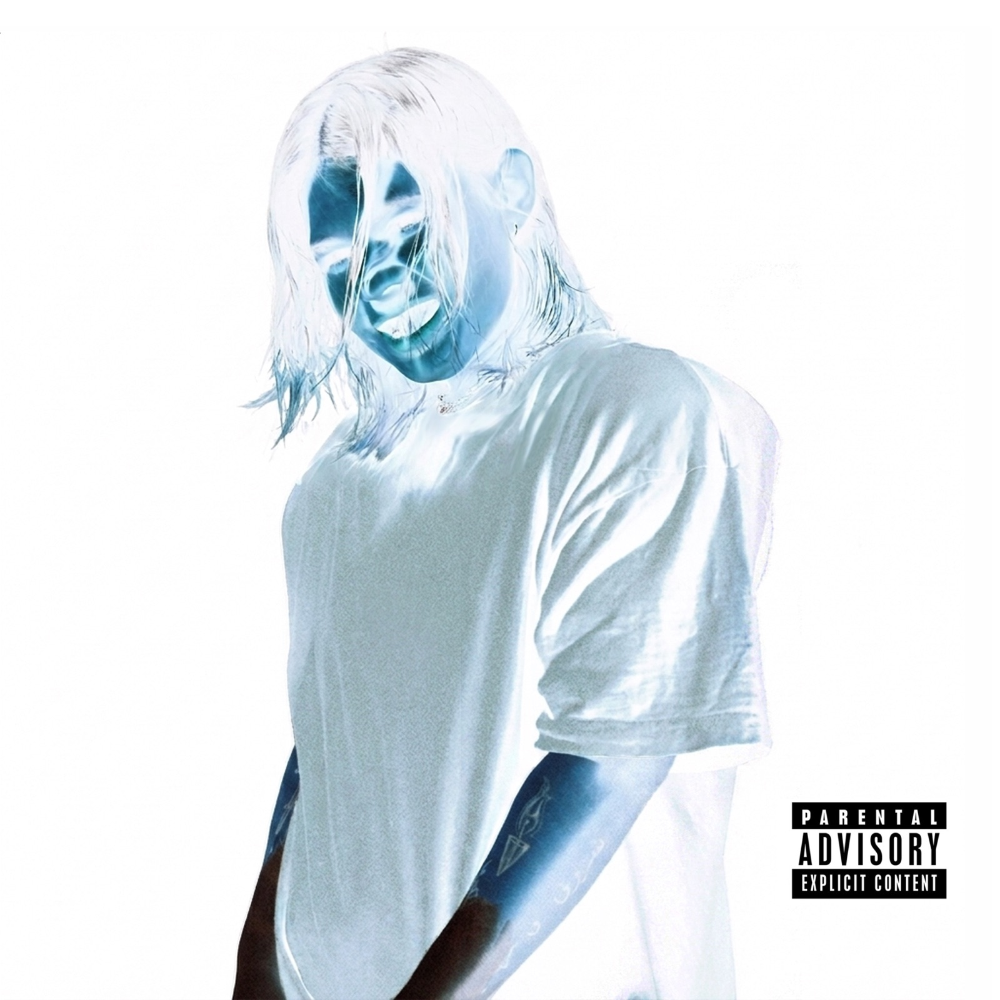
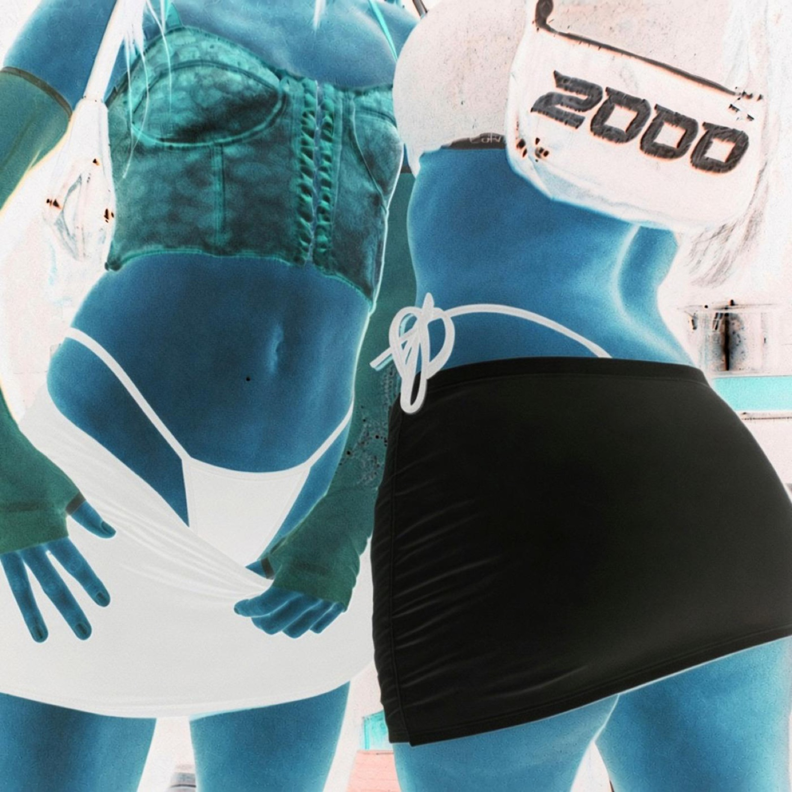

JASHIM
JASHIM releases his self-titled debut album ‘JASHIM’, an exploration of courtship and love in Montreal’s latinx underground.
The record moves between euphoria and vulnerability: beautiful micromelodies, rolling dembow, and the tension of two people caught on the same late-night frequency. It feels like a melancholic perreo on a mid-summer night.
Jashim’s Colombian roots collide with the global zeitgeist as he moves through Guaracha, Neo-Perreo, Reggaeton, Brega Funk, Electro and Ballroom/Vogue. The album brings together artists from Colombia, Mexico and Quebec, switching fluidly between Spanish and French to build a cross-cultural dialogue that pushes the boundaries of Latin club music.
Guests include vskz, Moonstar, Xlow, KIDDEIN and Sinjin Hawke, who also executive-produced the record. From the rolling dembow and deep UK bass of lead single ‘Yo Sé’ onward, the album dances between the romantic and the hedonistic: songs for perreo, with a melodic and emotional softness underneath.
‘JASHIM’ will be available on Friday, November 6th 2026 via all significant digital retailers on Visceral Vaults, a sublabel of Fractal Fantasy
Yo Sé — single out October 2nd |

Second single out October 16th |
| 1. |
Jashim |
Yo Sé |
2:40 |
| 2. |
Jashim |
Explosión del Corazón (feat. vskz) |
3:26 |
| 3. |
Jashim |
Llueven Balas en el Club |
3:17 |
| 4. |
Jashim |
Gistro (feat. Moonstar) |
2:40 |
| 5. |
Jashim |
Volver por Mí |
2:11 |
| 6. |
Jashim |
La Sigo |
3:03 |
| 7. |
Jashim |
Para Maria (feat. Sinjin Hawke) |
4:14 |
| 8. |
Jashim |
Loup-Garou |
3:13 |
| 9. |
Jashim |
Con Migo (feat. Xlow) |
2:44 |
| 10. |
Jashim |
Exztasi (feat. KIDDEIN) |
4:02 |
Executive producer: Sinjin Hawke
© VISCERAL VAULTS 2026 // VV007